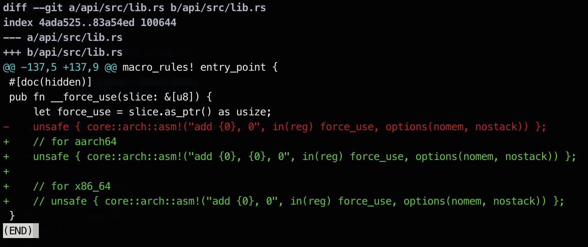

The Boot Process
- Executes Motherboard ROM firmware code
- power-on-self-test(https://en.wikipedia.org/wiki/Power-on_self-test)
- detect available RAM
- pre-initialize CPU & other hardwares
- looks for bootable disk
QEMU
QEMU-ARM64 UEFI HOWTO: https://cdn.kernel.org/pub/linux/kernel/people/will/docs/qemu/qemu-arm64-howto.html
Patch for bootloader_api crate
diff --git a/api/src/lib.rs b/api/src/lib.rs
index 4ada525..83a54ed 100644
--- a/api/src/lib.rs
+++ b/api/src/lib.rs
@@ -137,5 +137,9 @@ macro_rules! entry_point {
#[doc(hidden)]
pub fn __force_use(slice: &[u8]) {
let force_use = slice.as_ptr() as usize;
- unsafe { core::arch::asm!("add {0}, 0", in(reg) force_use, options(nomem, nostack)) };
+ // for aarch64
+ unsafe { core::arch::asm!("add {0}, {0}, 0", in(reg) force_use, options(nomem, nostack)) };
+
+ // for x86_64
+ // unsafe { core::arch::asm!("add {0}, 0", in(reg) force_use, options(nomem, nostack)) };
}

- Translate instruction from x86 to aarch64
Reference
https://developer.arm.com/documentation/dui0068/b/ARM-Instruction-Reference/ARM-general-data-processing-instructions/ADD—SUB—RSB—ADC—SBC—and-RSC https://c9x.me/x86/html/file_module_x86_id_5.html
Bootable Disk Image
mkdir kernel
mv src kernel/
mv Cargo.toml kernel/
cargo init --new cosmos# top-level Cargo.toml
[workspace]
members = ["kernel"]Bootloader
rustup install nightly# rust-toolchain.toml
[toolchain]
channel = "nightly"rustup target add aarch64-unknown-uefi
cargo build --target aarch64-unknown-uefi